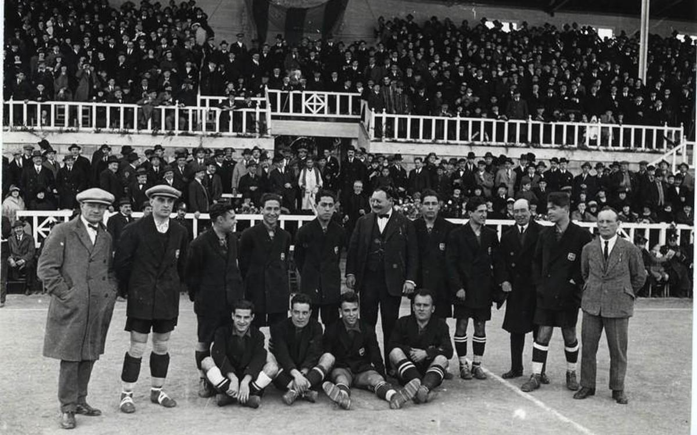
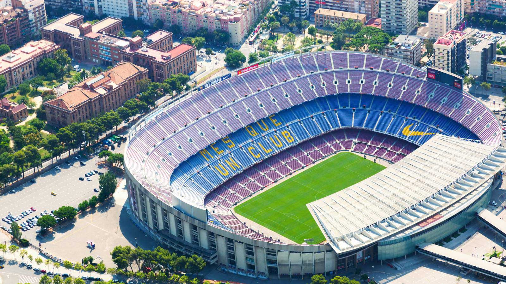
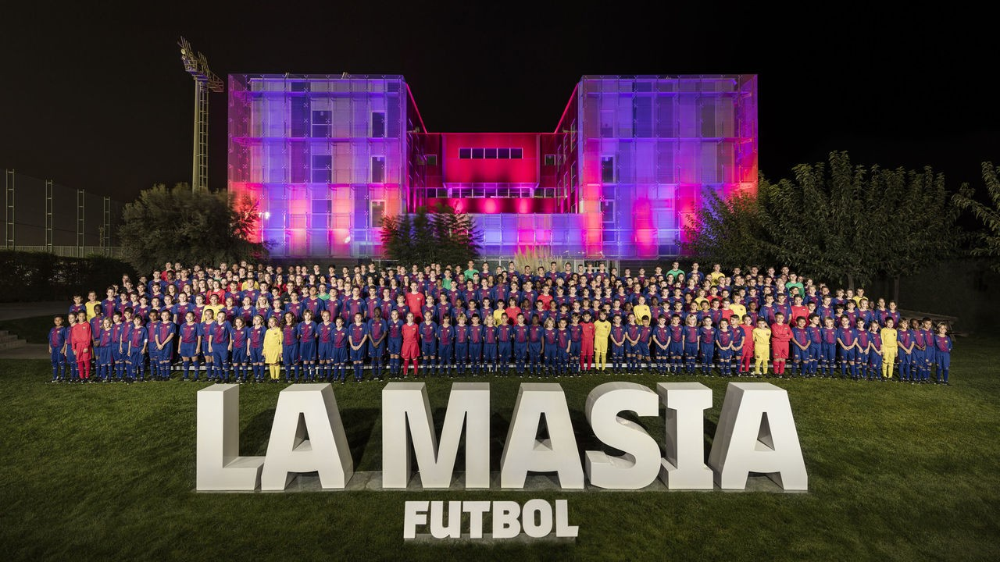
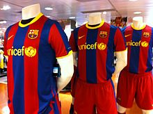
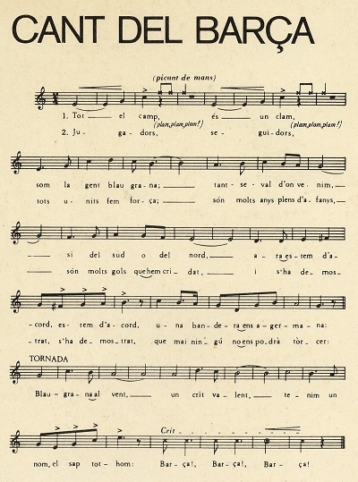

À propos du Club
Fondateur de FC Barcelone
Hans-Max Gamper, connu en Espagne sous le nom de Joan Gamper, né le 22 novembre 1877 à Winterthour et mort le 30 juillet 1930 à Barcelone, est un joueur suisse de football, fondateur et huitième pérsident du FC Barcelone. Il a également cofondé le FC Zurich en 1896 et le Real Club de Tenis Barcelona. Hans Gamper était le troisième d'une famille de cinq enfants. La mère de Hans Gamper, Rosine Emma Gamper, décède alors qu'il est ââgé de huit ans. Son père, August Gamper, décide de quitter Winterthour pour Zurich. À l'âge de 12 ans, Hans Gamper, grand passionné de sport, se fait déjà remarquer pour ses qualités de cycliste.Il se consacre de plus en plus au football devenant un des meilleurs joueurs suisses. Il est capitaine du FC Bâle avant de jouer au FC Excelsior de Zurich. En 1896, un différend le force à quitter le club et il fonde alors le FC Zurich. En 1897, Gamper part travailler à Lyon où il continue à pratiquer le sport, notamment le rugby à XV, au sein de l'Union Athlétique. Tant à Zurich qu'à Lyon, il est considéré comme un athlète exceptionnel de par sa classe et sa vitalité. Il rejoint par la suite le club du FC Lyon à 21 ans. Arrivé de Lyon à Barcelone pour rendre visite à son oncle, celui-ci le convainc de s'y installer. Très tôt, Hans Gamper se lie d'amitié avec la colonie étrangère de Barcelone. Il pratique le football dans le quartier de Sant Gervasi de Cassoles où il réside. Homme enthousiaste et trés actif, il décide de contribuer à la diffusion du football en fondant un club. Gamper publie une annonce dans le magazine sportif de Barcelone Los Deportes le 22 octobre 1899 demandant des joueurs. Un mois plus tard, le 29 novembre 1899, a lieu la fondation officielle du FC Barcelone dans les locaux du Gimnasio Solé, au numéro 5 de la rue Montjuïc del Carme. On choisit comme couleurs du maillot du FC Barcelone le bleu et le rouge (grenat), les mêmes que le FC Bâle, le club préféré de Hans Gamper.

Histoire de FC Barcelone
1899-1909 NAISSANCE ET SURVIE : La fondation du Club en 1899 a coïncidé avec les années du démarrage de la pratique sportive en Catalogne, dans le contexte d'un climat social et culturel propre, favorable à l'adaptation d'un modèle de loisirs moderne. Joan Gamper, fondateur du Club, a été l'âme et le promoteur du processus pendant les 25 premières années. Son engagement envers le FC Barcelone va au-delà; de ses facettes comme joueur, dirigeant et président. ~1909-1919 CONSOLIDATION SUR LE TERRAIN DE LA RUE INDÚSTRIA : En novembre 1908, le Club semblait toucher fond, avec 38 socios qui étaient sur le point de l'abandonner. Gamper n'a pas laissé mourir le Club et, pour la premiè;re fois, il est devenu président du Club. Ainsi commençait une nouvelle étape de l'histoire du Club, qui a supposé sa consolidation dans le paysage du football et social de la ville et du pays. Il s'agit d'un processus dans lequel ont convergé plusieurs circonstances. ~1919-1930 L’ÉPOQUE DORÉE : Lors des années vingt, le football devient un sport de masses. Le FC Barcelone continue à attirer une grande partie de l'attention du football grâce à une équipe de rêve, composée de figures comme Samitier, Alcéntara, Zamora, Sagi, Piera et Sancho, qui deviennent les premières grandes idoles du barcelonisme. ~1969-1978 CRUYFF, DÉMOCRATIE : En 1969, Agusti Montal Costa a gagné les élections à la présidence du Club. Son programme insistait sur l'implication des socios, avec l'engagement d'essayer que l'opinion de tous soit reflétée è travers le vote. En 1973, Montal a été réélu président. Il s'était présenté sous le slogan « Le Barça est plus qu'un club ». Arrive aussi pendant cette période Johann Cruyff, qui va changer l'histoire du Barça. ~1988-1996 LA « DREAM TEAM » : À partir de 1988, avec Cruyff comme entraîneur, le bon football et les succès sportifs sont revenus. Le Conseil de direction que présidait Nunez a misé sur une série de footballeurs qui ont apporté enthousiasme et spectacle, et qui ont rempli à nouveau le Camp Nou. Le FC Barcelone a réussi à remporter quatre championnats de Liga consécutifs entre 1990 et 1994. La conquête de la Coupe d'Europe en 1992 a marqué le point culminant de cette étape, reconnue pour le jeu à une touche, l'envie offensive et l'esprit gagnant des joueurs de Cruyff. ~2008-2015 LES MEILLEURES ANNÉES DE NOTRE HISTOIRE : Du Barca de Guardiola au Barca de Luis Enrique, de nombreuses équipes performantes se sont succédé. Le FC Barcelone a exercé une domination sur l’Espagne et l’Europe lors de cette période, et le beau jeu de l’équipe a été reconnu par tous les spécialistes mondiaux. De plus, le succès du football a été accompagné du succès des sections du FC Barcelone.
Camp Nou
Le Camp Nou qui signifie en catalan « nouveau stade ») est un stade de football, situé à Barcelone dans le district des Corts, en Espagne. Le FC Barcelone en est le club résident depuis son inauguration. Avec une capacité de 99 354 places, le Camp Nou est le plus grand stade d'Europe et le douzième plus grand stade du monde. Cet édifice est classé Stade UEFA catégorie 4, ce qui lui permet de recevoir de nombreux matchs internationaux et notamment plusieurs finales de Ligue des champions, la derniè;re étant la finale de l'édition 1999. Le Camp Nou est construit en 1957 à Barcelone par les architectes Francesc Mitjans Miro, Josep Soteras Mauri et Lorenzo Garcia Barbin, après une période particulièrement faste pour le FC Barcelone, symbolisé par les performances du Hongrois Laszlo Kubala. Il se situe dans le même district que l'ancien stade des Corts ou Camp Vell (« vieux stade » en catalan). Sa construction s'étale sur plus de trois ans. Sa capacité d'accueil atteint initialement les 93 000 places. Il est inauguré le 24 septembre 1957 par une messe solennelle et par la bénédiction du stade par l'archevê;que de Barcelone, Monseigneur Gregorio Modrego. Dans les années qui suivent, le Camp Nou ne connaÎt que peu de changements, si ce n'est l'augmentation de sa capacité qui est portée à 120 000 places avant la Coupe du monde de 1982 et l'ouverture d'un muée du club en 1984. Outre les matchs du FC Barcelone, il est choisi comme cadre de manifestations religieuses comme lors de la visite du pape Jean-Paul II le 7 novembre 1982, mais surtout culturelles, avec divers concerts organisés notamment en 1988. En 1993, 1994 puis en 1998, le stade connaît de nouveaux travaux de rénovation, qui lui permettent de répondre en particulier aux normes de sécurité instaurées par l'UEFA. La capacité du stade est ainsi diminuée jusqu'à; atteindre 98 772 places. En 2000, le FC Barcelone organise un vote pour changer le nom du stade. Le surnom le plus populaire Camp Nou est adopté comme nouveau nom officiel.
La Masia
La Masia (Le Mas en catalan) est le centre de formation du FC Barcelone depuis 1979. Le bâ;timent, un mas traditionnel catalan situé près du Camp Nou, date de 1702. De 1966 à 1979, ce fut le siège du FC Barcelone avant que le président du club Josep Lluis Nunez ne le transforme en centre de formation. Depuis 2011, le centre de formation a déménagé vers de nouveaux locaux situés dans l'ultra-moderne cité sportive Joan Gamper. Le nom officiel du centre de formation est désormais La Masia – Centre de Formacio Oriol Tort. Au fil des années, La Masia est devenue une pièce essentielle dans la structure sportive du FC Barcelone. La Masia est la source des forces vives du club. À cô;té du FC Barcelone B, l'équipe espoir principale du club qui évolue en deuxième division, il existe douze équipes junior qui comptent en tout plus de 300 joueurs et 24 entraîneurs. Depuis 2002, le directeur de La Masia est Carles Folguera, tandis que José Segura est le directeur du football formateur depuis juillet 2015. À partir de juin 2011, le centre de formation quitte La Masia pour intégrer de nouveaux locaux dans l'ultra-moderne Cité sportive Joan Gamper.
Les Couleurs
Les couleurs bleu et grenat sont portées pour la première fois par les joueurs barcelonais lors d'un match contre Hispania en 1900. Plusieurs versions existent pour expliquer ce choix : le fils du premier président, Arthur Witty, expliquera que son père avait eu l'idée de reprendre les couleurs de l'équipe de la Merchant Taylors' School, une école anglaise dont il était originaire. L'auteur Toni Strubell explique que ces couleurs sont celles de la Première République française de Robespierre. Enfin, l'explication la plus communément admise est que le choix est celui de Joan Gamper, qui reprend les couleurs de son ancien club le FC Bâle. Le maillot blaugrana est longtemps réalisé par l'entreprise textile catalane Meyba, remplacé en 1992 par l'Italien Kappa, puis depuis 1998 par l'Américain Nike. Il reste longtemps vierge de tout sponsor, alors que cet usage se généralise à; travers le monde du football professionnel depuis les années 1970. Pendant les années 2000, les difficultés économiques connues par le club alimentent les rumeurs sur la fin de cette spécificité , qui disparaît finalement en 2006 une fois l'équilibre économique retrouvé, lorsque le président Laporta annonce la signature d'un contrat de cinq ans avec l'Unicef auquel le club verse plus de 1,5 million d'euros129. Ce partenariat « vise en réalité à rendre plus digeste la pilule marketing qui s’annonce » : quatre ans plus tard, Sandro Rosell signe le premier contrat de sponsoring du maillot avec la Fondation du Qatar, dont le nom apparaî;tra sur le maillot à partir de la saison 2011-2012 . À partir de la saison 2013-2014, c'est le nom de la compagnie aérienne Qatar Airways qui apparaît sur le maillot. Lors de la saison 2015-2016, les bandes sont horizontales pour la première fois. Le maillot de la saison 2019-2020 est pour la première fois bleu à damiers grenats, semblable dans la forme à celui de l'équipe de Croatie
L'Hymne
Le club a connu plusieurs hymnes officiels au cours de son histoire. Celui qui est actuellement utilisé, connu comme El Cant del Barça (en français : « le chant du Barça »), est écrit en 1974 pour les célébrations du 75e anniversaire du club. Josep Maria Espinas et Jaume Picas sont chargés d'en écrire les paroles en catalan, tandis que la composition musicale est confiée à; Manuel Valls i Gorina. L'hymne rappelle le caractère ouvert et intégrateur du club : « Peu importe d’où nous venons, du sud ou du nord, […] Un drapeau nous rassemble ». les paroles de l'Hymne : Tout le stade ! Est une clameur ! Nous sommes les blaugranas, De n’importe oú d’où nous venons, Du sud ou du nord, Maintenant nous sommes d'accord, nous sommes d'accord, Un drapeau nous rassemble. Blaugrana au vent, Un cri courageux, Nous avons un nom, tout le monde le connaît, Barça, Barça, BAAAARÇA!!!!! Joueurs ! Supporters ! Notre union fait notre force, Beaucoup d'années sacrifiées, Beaucoup de buts célébrés, Et c’est démontré, c’est démontré, Que jamais personne ne nous vaincra. Blaugrana au vent, Un cri courageux, Nous avons un nom, tout le monde le connaît, Barça, Barça, BAAAARÇA!!!!
